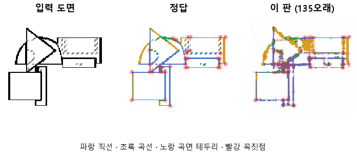

한 줄로
물음: 134와 같은 설정으로 여섯 배 오래 학습하면, CNN 맨 뒤 층에 붙인 판독기가 도면의 선을 결국 배울까?
답: 배우지 못했다. 시험 성적은 50바퀴 무렵에 멈췄다. 목표 7개 중 1개만 넘겨서 판정은 실패다.
왜 이 판을 했나
CNN은 그림에서 특징을 뽑는 부분이다. 우리는 CNN의 층 위에 작은 판독기를 붙이고, 그 판독기가 도면의 선을 그려 내도록 학습시킨다. 판독기가 선을 잘 그리면 그 층에 선 정보가 들어 있다는 뜻이다. 134에서는 맨 뒤 층에 판독기를 붙여 10바퀴 학습했는데 성적이 낮았다. 학습량이 모자랐는지, 구조가 문제인지는 알 수 없었다. 그래서 학습량부터 지워 보기로 했다.
바꾼 것 하나
학습 바퀴 수만 10에서 60으로 늘렸다. 한 바퀴는 데이터 전체를 한 번 도는 것이다. 학습 부품 3,000개, 시험 부품 299개, 부품마다 위·앞·옆 도면 세 장은 134와 같다. 대조는 CNN 없이 그림 화소를 바로 읽는 판독기로, 똑같이 60바퀴 돌렸다.
결과

| 이 판 | 대조 | 목표 | 넘었나 | |
|---|---|---|---|---|
| 선이 있는 자리를 찾음 | 0.89 | 0.98 | 0.90 | ✗ |
| 선 없는 곳에 잘못 그림 | 3.53 % | 0.20 % | 2 % 아래 | ✗ |
| 곡선을 곡선으로 | 0.63 | 0.62 | 0.90 | ✗ |
| 직선을 직선으로 | 0.61 | 0.62 | 0.90 | ✗ |
| 꼭짓점 (F1) | 0.48 | 0.28 | 0.75 | ✗ |
| 곡선, 대조보다 | +0.01 | +0.15 | ✗ | |
| 꼭짓점, 대조보다 | +0.21 | +0.20 | ✓ |
점수는 모두 1이면 완벽이다. F1은 「찍은 점 중 맞은 비율」과 「정답 점 중 찾은 비율」을 함께 본 점수다. 아래 두 줄은 CNN이 화소만 읽을 때보다 얼마나 보태는지 보려고 둔 목표다.
왜 이렇게 나왔나
확인한 것
- 오래 돌려도 시험 성적은 오르지 않았다. 시험 오차는 1바퀴 10.86에서 50바퀴 4.13까지 내려온 뒤, 마지막 열 바퀴 동안 0.02도 움직이지 않았다. 같은 기간에 학습 오차는 4.02에서 3.85로 계속 내려갔다. 학습 부품에서만 나아진 것이다.
- 선의 자리는 앞 층이 더 잘 안다. 맨 앞 층에 판독기를 붙이면 자리가 0.96으로 목표를 넘는다. 같은 방식으로 재면 선 없는 곳에 그리는 비율도 앞 층은 1.45 %, 맨 뒤 층은 4.33 %다.
- 선마다 직선·곡선·곡면 테두리·숨은선 중 무엇인지 맞힌 종합 점수는 맨 뒤 층 0.72, 맨 앞 층 0.56, 화소 대조 0.57이다. 다만 직선과 곡선만 떼어 보면 뒤 층도 화소와 같다. 뒤 층이 앞선 곳은 꼭짓점(0.48 대 0.28)과 곡면 테두리(0.61 대 0.29)뿐이다.
짐작 (아직 확인 안 함)
- 맨 뒤 층은 그림을 많이 줄인 상태라 선이 지나는 화소를 잃는다고 본다. 그래서 오래 돌려도 자리가 오르지 않았을 수 있다.
- 꼭짓점은 정답 점의 0.65를 찾았는데, 찍은 점 중 맞은 것은 0.38뿐이다. 자리가 흐려서 점을 넓게 번지게 찍는 듯하다.
- 직선과 곡선이 0.6대에 묶인 까닭은 아직 모른다.
한계
- 시험 부품 299개로 한 번만 돌렸다. 다시 돌렸을 때 오차와 점수가 얼마나 흔들리는지는 재지 않았다. 그래서 「멈췄다」도 그 흔들림 안의 일인지 모른다.
- 유일하게 넘은 꼭짓점 차이는 목표를 0.01 차로 넘었다. 우연일 수 있다.
- 직선과 곡선이 왜 화소 대조와 같은 수준인지 설명하지 못했다.
배운 것과 다음
학습량은 범인이 아니었다. 50바퀴를 넘기면 시험 성적이 그대로다. 대신 선의 자리는 앞 층이 더 잘 안다는 것을 봤다. 그런데 우리는 뒤 층만 읽고 있었다. 뒤 층이 종류를 더 안다는 근거는 꼭짓점과 곡면 테두리뿐이라 아직 약하다.
- 맨 앞 층과 맨 뒤 층을 이어 붙여 판독기에 넘긴다.
- 학습은 50바퀴에서 끊는다.
- 직선을 곡선으로 읽은 자리를 그림으로 모아 본다.